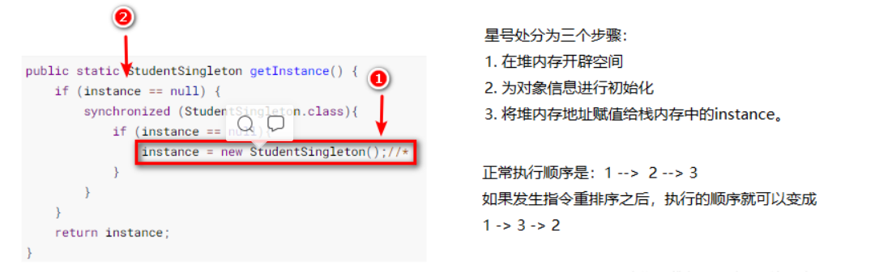
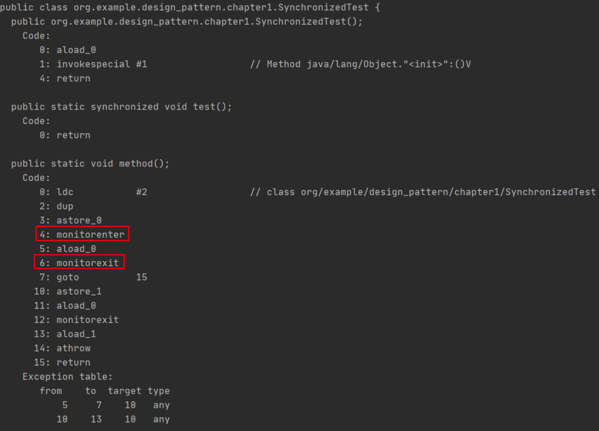
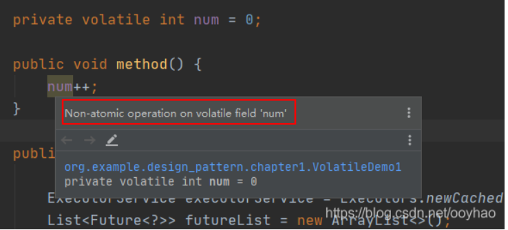
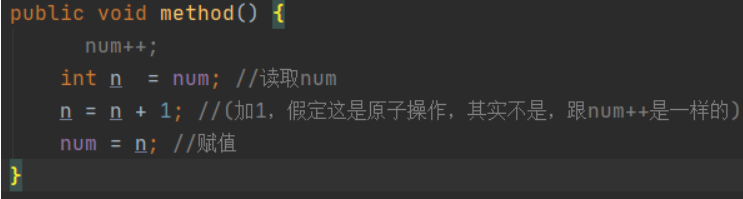

不一般的单例模式
不一般的单例模式
多线程下的单例模式
1 | |
上述星号处其实包括三个步骤：
- 在堆内存中开辟空间 ①
- 调用构造方法，初始化对象信息 ②
- 将堆内存地址赋值给栈内存的instance ③
但是在 JVM 中，会根据一定的条件进行优化，导致部分不相互依赖的语句可能会进行顺序的调整，这样可以优化硬件的使用效率（这里不细说，关于一些寄存器了）。 经过指令重排之后，单线程下依旧可以保证最终结果一致性，如果连基本正确性都无法保证，那么优化也没有任何意义了。但是在多线程情况下，指令重排之后，就会出现一些问题了。

当发生指令重排后，线程1，在①处，顺序可能变为 1 -> 3 -> 2 , 而当执行完第二步赋值后，还没完成初始化，此时CPU执行切换到线程2。那么此时线程2进行instance判空的话，不为空，但是此时线程1的初始化操作可能没有完成。这样如果线程2的调用者在操作对象时，可能会造成某些对象没有，比如抛出空指针异常 NullPointerException. 那有什么解决办法呢？由于jdk5之后对volatile关键字加强作用后，可以使用关键字volatile关键字修饰instance。如下：
1 | |
我们知道synchronized关键字可以保证线程安全，即可以保证：①原子性 ②可见性 ③ 有序性。至于这三个特性的具体含义，这里不再详细描述了。但是，即使将创建对象的代码放在synchronized代码块中，也无法解决指令重排的问题，此时就需要使用我们的volatile关键字了。使用volatile关键字修饰instance之后，可以防止指令重排，即不会出现步骤2 和 步骤3 进行换序的问题 （ 1->2->3），也就不会出现线程2 读取到 instance不为null，但是可以使用内部属性出现异常的情况。
留疑：在double-check 下的单例模式，即使发生指令重排，是否异常只会发生在多核CPU下，单核CPU是不是不会出现问题呢？
经过讲述单例模式的几种方式，以及double-checked locking问题，引入了关键字synchronized和volatile, 那下面我们就真正的走进多线程。
并发的三大特性
三个并发基础 为了保证线程安全，Java并发有哪几个基本特性呢？
A：有三个特性：①原子性 ②可见性 ③有序性。
Q：好，能不能详细说一下这三个特性呢？
A：
原子性（Atomicity）：这个其实和数据库的原子性是相似的，简单来说就是 要么全做完，要不一点都不做。在多线程中表现为 当线程A在执行一段代码时，不能被其他线程所干扰。同时在这段代码开始执行到执行完过程中，CPU的执行权不会能进行切换，即不能中断，要么全部执行完，要么就不执行，这样才能保证原子性。
可见性（Visibility）：表现为线程A对共享资源的操作对其他线程是及时可见的，即其他线程可以立即知道共享资源发生了修改。显然在串行程序中，可见性问题是不存在的。因为你在任何一个操作步骤中修改了某一个变量，后续的步骤中都可以读取到这个变量的值，而且读取到的都是修改后的值。
有序性（Ordering）：串行化的程序中，其实有序性的问题是不存在，即使JVM进行优化，也必须保证语句的最终一致性。所以在我们看来就相当于代码从上至下依次执行。 但是在多线程环境下，代码的顺序就难以预测了，可能由于指令重排的发生，会导致一些看似不可能发生的问题。所以：如果在本线程中观察，所有的操作都是有序的；如果在一个线程中观察另一个线程，所有操作都是无序的。前者是指“线程内表现为串行语义”。而后者是指“指令重排”现象和“工作内存和主内存同步延迟”现象。
对于有序性，有一些指令是不允许指令重排的，称为先行发生原则 (happens-before relationship)
程序顺序原则：一个线程内，按照代码顺序，书写在前面的操作先行发生于后面的操作。
锁定规则：一个unLock 操作先行发生于后面对同一个锁的lock操作。
volatile变量规则：对一个变量的写操作先行发生于后面对这个变量的读操作。
传递规则：如果操作A先行发生于操作B，而操作B有先行发生于操作C，则可以得出操作A先行发生于操作C。
线程启动规则：Thread对象的start方法先行发生于此线程的每一个动作。
线程中断规则：对线程interrupt方法的调用先行发生于被中断线程的代码检测到中断事件的发生。
线程终结规则：线程中所有的操作都先行发生于线程的终止检测，我们可以通过Thread.join() 方法结束，Thread.isAlive() 的返回值手段检测到线程已经终止执行。
对象终结规则：一个对象的初始化完成先行发生于它的finalize()方法的开始。
synchronized
synchronized 关键字是JDK内置的。是一个内置可重入锁，据说在jdk5之前，这个内置锁的效率不怎么样，但是等到了jdk5了，jdk进行了大量的优化，现在的效率已经非常不错了。
那为什么我们会使用到synchronized呢？因为在多线程场景下，存在共享数据，多个线程会去操作共享数据，导致共享数据会出现线程安全的问题。所以我们需要使用synchronized关键字修饰，将共享资源的操作放置到同步代码中，使得每次只有一个线程进行操作。这样就可以保证线程安全了。
synchronized 可以保证并发安全，即能保证 ① 原子性 ② 有序性 ③可见性
synchronized 底层是使用字节码指令 monitorenter 和 monitorexit 实现的。
我们将下面这段代码使用javap命令看一下：
1 | |

可以看到，其中使用同步代码块的方法，多了monitorenter 和 monitorexit两条指令。
synchronized 关键字的三种使用方式：
修饰静态方法。锁的是当前类的class对象。
修饰普通方法。锁的是当前对象。(this)
修饰代码块。则锁的是指定的对象。
下面我们通过代码演示一下：
锁静态方法
1 | |
上述代码synchronized关键字锁的是 MonitorObject.class 对象。也就是上面的第一种情况。
锁普通方法
1 | |
上述代码，调用method方法时，锁的是当前调用的对象。即下面的代码中，锁的是 obj 对象。
1 | |
锁代码块
1 | |
上述代码显而易见就是锁的ob对象。当多个线程来访问，都需要获取ob锁，如果被占用，则阻塞等待。
volatile
Java语言提供了一种稍弱的同步机制，即volatile变量，用来确保将变量的更新操作通知其他线程。
一旦一个共享变量（类的成员变量、类的静态成员变量）被 volatile修饰之后，那么久具备了两层语义：
1）保证了不同线程对这个变量进行操作时的可见性，即一个线程修改了某变量的值，这个新值对其他线程来说是立即可见的。
2）禁止进行指令重排。
现在的处理器都是多核CPU的，那我们用图来简单描述一下线程与主存的联系，可以发现中间有一个CPU cache。由于CPU与主存的数据的频繁交互，在一定程度上也会降低性能，所以现在的处理器中，一般CPU都会相应的告诉缓存。如果单核CPU到不会出现数据不一致的问题，因为都是操作相同的高速缓存，但是放在多核CPU就会出现问题。

如上图所示，假如线程1在CPU1中执行，而线程2在CPU2中执行。当两个线程都需要对主存中的共享变量进行操作时，CPU1和CPU2都会将Main Memory 中的共享变量拷贝一份到自己的cpu cache中，这样就会出现问题。
我们来看一下下面的代码，线程1先执行，线程2后执行。
1 | |
这段代码我们不能把它放在一个方法里，需要分来，如下：
1 | |
通过上述代码需要先ThreadA调用method，然后ThreadB调用updateStopState 方法。这段代码在测试过程中，很难遇到死循环的问题，但是这段代码理论上是有问题的。即：如果ThreadA和ThreadB分别在不同的CPU上执行的话，首先AB线程都会把共享数据stop拷贝一份放置到自己的高速缓存中，此时线程A判断自己的缓存的stop为false，循环执行，此时线程B修改stop为true，然后写回主存，但是此时ThreadA无法感知到变化，因为自己的高速缓存的stop一致是false，这样就会出现死循环的问题。此时就需要使用volatile 修饰stop变量了。
volatile修饰之后就变得不一样了：
第一：使用volatile关键字会强制将修改的值立即写入到主存。
第二：使用volatile关键字的话，当线程B进行修改时，会导致线程A的工作内存中缓存变量stop的缓存行无效。（反映到硬件层面的话，就是CPU的L1和L2缓存中对象的缓存行失效）；
第三：由于线程A的工作内存中缓存变量stop的缓存行无效，所以线程A再次读取变量的值时会去主存中读取。
那么在线程B修改stop的值时（当然这里包括2个操作，修改线程2工作内存中的值，然后将修改后的值写回到主存），会使得线程A的工作内存中缓存变量stop的缓存行无效，然后线程A读取时，发现自己的缓存行无效，它会等待缓存行对应的主存地址被更新之后，然后去对应的主存读取最新的值。
那么线程A读取到的就是最新的正确的值。
volatile 能保证原子性吗？
我们先来看一个实际的例子：
1 | |
通过运行上面的例子，通过输出结果我们就可以验证上面的例子。那么这是为什么呢？按我们正常的想法，应该是输出100，但是输出的结果基本都是小于100的。
如果使用idea的小朋友可能会发现，idea其实有提示：
基本就是：在 volatile 修饰的属性 num 上的操作不是原子操作。
那这里为什么不是原子操作呢？
1 | |
其实num++ 计算不是一步到位的，需要分为三步：
- 第一步：read num from memory 读取num的值。
- 第二步：add 1 在原来的num基础上加1。
- 第三步：write num to memory 将num写回到内存中。

我们可以想象一下，此时num = 10， 当线程A执行到第二步，此时线程A的n变为11，但是还没来得及写回内存，此时CPU执行权切换到线程B，即使此时num是volatile变量，满足可见性，即直接会写回到内存中，但是由于CPU执行权的切换，导致A还没写回到内存中，B已经开始读，读取到的num还是10.执行到第三步，线程B写回到内存值为11. 此时CPU执行权切换回A，A将11写回内存，导致A和B写回的都是11。这也就是输出结果小于100的根本原因，所以volatile不能保证对变量的操作是原子性。
那如果需要实现上述功能呢，我们可以将代码进行改造：
方式1：使用synchronized关键字进行同步
1 | |
仅以同步代码块示例。由于此时使用了同步代码块，可以保证并发的三个特性，所以这里num可以不用volatile修饰。
方式2：使用Lock锁
1 | |
使用Lock锁来保证临界区的线程安全。
方式3：使用AtomicInteger原子类
1 | |
在java1.5 的 java.util.concurrent.atomic包下提供了一些原子操作类，即对基本数据类型的自增(加1操作)，自减（减一操作），以及加法操作（加一个数），减法操作（减一个数）进行了封装，保证这些操作是原子性操作。
volatile 能保证有序性吗
volatile关键字可以禁止指令重排序，所以volatile在一定程度上是可以保证有序性的。
volatile关键字禁止指定重排序有两层意思：
1）当程序执行到volatile变量的读操作和写操作时，在其前面的操作的更改肯定全部已经进行，切结果已经对后面的操作可见；在其后面的操作肯定还没有进行；
2）在进行指令优化时，不能将在对volatile变量访问的语句放在其后面执行，也不能把volatile变量后面的语句放在其前面执行。
可能上面的说的比较绕，举个简单的例子：
1 | |
由于flag变量是volatile变量，那么在进行指令重排序的时候，不会将语句3放在语句1和语句2前面，也不会将语句3放在语句4和语句5后面，但是要注意语句1和语句2的顺序，语句4和语句5的顺序是不作任何保证的。并且volatile关键字能保证，执行到语句3时，语句1和语句2 必定是执行完毕了的，且语句1和语句2的执行结果对语句3和语句4，语句5是可以见的。
那么再看一个例子：
1 | |
如果inited 不是volatile修饰的变量的话，如果指定重排，可能会将语句2放在语句1前面，导致语句2先执行。此时线程2进来判断之后，可能此时context还没有加载完成，则会导致程序出错。
如果我们使用volatile修饰inited变量，就不会出现这种问题，可以保证语句1执行完之后，才会执行语句2，并且context可以保证可见性，线程2是可以立即感知到的。
volatile 的原理和实现机制
摘自《深入理解Java虚拟机》：
“观察加入volatile关键字和没有加入volatile关键字时所生产的汇编代码发现，加入volatile关键字时，会多出一个lock前缀指令”。
lock前缀指定实际上相当于一个内存屏障（也成为内存栅栏），内存屏障会提供三个功能：
1） 它确保指定重排序时不会把其后面的指令排到内存屏障之前的位置，也不会把前面的指令排到内存屏障的后面；即在执行到内存屏障这句指令时，在它前面的操作已经全部完成；
2） 它会强制将对缓存的修改操作立即写入主存；
3） 如果是写操作，它会导致其他CPU中对应的缓存行无效；
使用场景
1） 状态量标记
2） 屏障前后的一致性
看这个！！
1 | |
自己理解其中的巧妙，哈哈哈哈
本博客所有文章除特别声明外，均采用 CC BY-SA 4.0 协议 ，转载请注明出处！